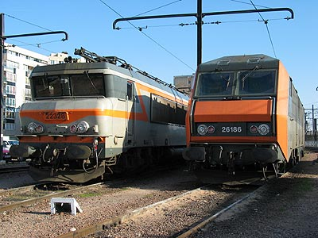

Locomotives Bicourantes
Le Réseau Ferré Français a la particularité de posséder deux types d'électrifications distincts. Le réseau principal s'est équipé en courant continu 1500 Volts jusque dans les années 50 où les premiers essais de courant alternatif à fréquence industrielle (20kV, 50Hz puis 25kV) donnèrent satisfaction. Apportant des gains importants en infrastructure, le nouveau courant équipa les réseaux qui faisaient encore appel à la vapeur ou au diésel, ainsi que le réseau à grande vitesse.
S'il n'était question d'électrifier, en premier lieu, que des lignes éloignées du réseau 1,5kV (Transversale Nord-Est), il était déjà prévu que les deux types de caténaires se rencontreraient un jour et qu'il faudrait disposer soit de gares commutables, complexes à exploiter, soit de machines aptes aux deux types de courants.
D'ailleurs, la première ligne d'expérimentation du monophasée (Aix-les-Bains - La Roche sur Foron) s'embranche sur la ligne 1,5kV Lyon-Culoz-Chambéry. Les premières machines aptes au monophasé en France étaient donc bicourantes. "Petites bicourantes" pour être exact, car le modeste équipement 1,5kV permettait tout juste décoller le train d'Aix-les-Bains ou d'acheminer les locomotives haut le pied jusqu'au dépôt de Chambéry.
Mises en application sur le prototype BB 20005, les diodes au silicium permirent enfin de réduire l'encombrement et le poids du redresseur de courant monophasé et d'installer dans la même machine deux équipements de puissance comparable. C'était le début de l'ère des "Grandes Bicourantes".
CC 20001
La BB 20005 et les BB MTE bicourantes
BB 25100
BB 25150
BB 25200
BB 22200
BB 25500
BB 26000
BB 27000
BB 27300

Les BB 22328 et 26186 stationnent à l'annexe du Charolais (16/03/2003)